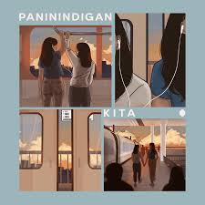
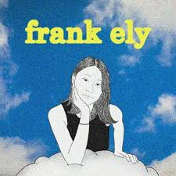
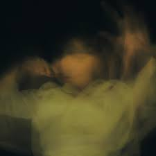

Songs

Paninindigan kita oo, Mamahalin kitang buong buo

Kay ganda mong pagmasdan Oh, sinta, napukaw mo Aking mata

Kailangan bang aminin pa kung kita naman sa 'king, Ginagawa ang ibig kong sabihin?

Nahuhulog sa lupa ang puso ko, Nakatutunaw mga titig mo